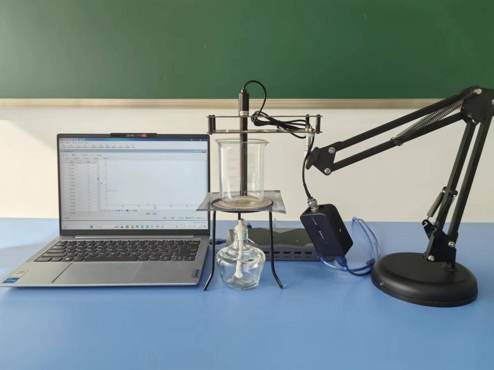
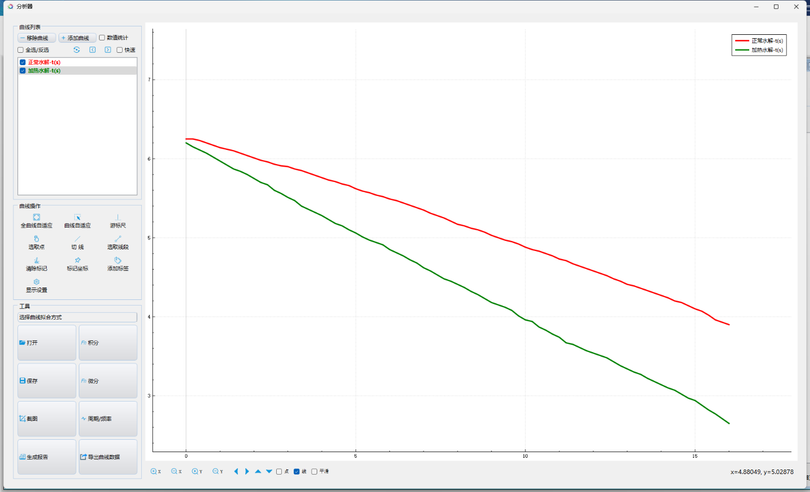

实验六十 盐类水解的应用
【实验目的】
探究盐类水解的影响因素。
【实验原理】
氯化铵（NH4Cl）的水解是一个酸碱平衡反应。温度：根据勒夏特列原理，升高温度会促进吸热反应的进行，而氯化铵的水解是一个吸热过程，因此提高温度会促进水解，增加水解程度。溶液中氯化铵的浓度增加，水解平衡会向生成更多盐酸的方向移动，导致溶液的酸性增强。相反，如果氯化铵的浓度较低，水解会倾向于生成更多的氨气。加入酸（如盐酸）会抑制氯化铵的水解，因为增加的H+浓度会与NH4+竞争水分子，从而抑制水解反应。而加入碱（如氢氧化钠）则会促进水解，因为OH一会与H+结合，推动平衡向水解方向移动。
【实验器材】
PH传感器、数据采集器、多功能支架、磁力搅拌器、烧杯、NH4Cl溶液、蒸馏水、胶头滴管、计算机等。
【实验装置图】

【实验操作步骤】
按实验装置图搭建好实验器材。打开实验数据分析软件，软件将自动连接传感器。
点击菜单栏的“表格视图”，并添加两个字段“测量时间”“PH值”。
向实验烧杯中加入10ml的NH4Cl溶液，并点击磁力搅拌器的红色按钮启动磁力搅拌。
记录此时溶液的pH值。
